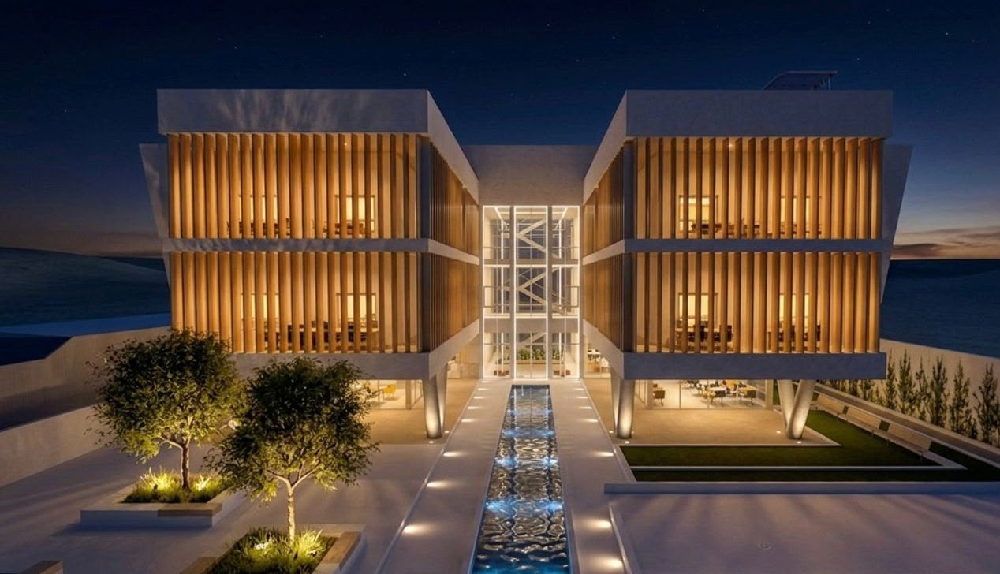
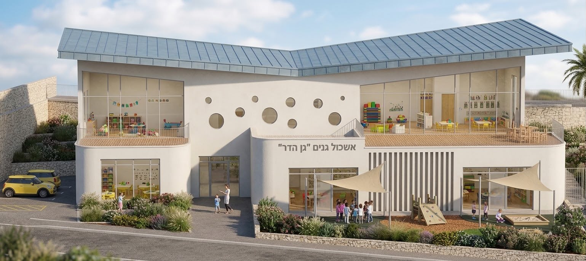
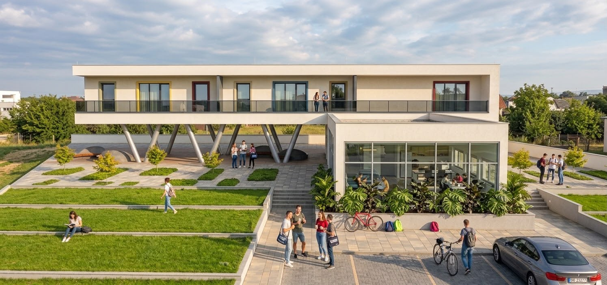

אדריכלות ועיצוב פנים
תיק עבודות
כרמל סעדון
הנדסאית אדריכלות ועיצוב פנים.
פרויקטים נבחרים מתקופת הלימודים.
01 / עבודות נבחרות
פרויקטים נבחרים
פרויקטים אקדמיים בשנים א׳–ג׳
מעונות כחממה
מעונות סטודנטים ומסחר
אשכול גנים
טבע, קהילה וזהות מקומית · זכרון יעקב

מעונות סטודנטים
מגורים ומרחבים משותפים

מבחר מתוך תהליך התכנון. לחצו לצפייה בגיליונות הפרויקט המלאים.
02 / קצת עליי
קצת עליי
SADON.
אני כרמל סעדון, הנדסאית אדריכלות ועיצוב פנים. אני משלבת ראייה מרחבית, חשיבה יצירתית וירידה לפרטים, כדי לתרגם רעיון לתכנון מדויק.
בעבודתי במשרד לעיצוב פנים אני עוסקת בתכנון ובעיצוב, בניהול וליווי פרויקטים משלב התכנון ועד לעיצוב הסופי, ובעבודה מול לקוחות וספקים. הניסיון שלי בניהול צוותים ובסביבות עבודה דינמיות מלווה אותי גם בתהליך התכנון: בהקשבה, בארגון ובחיבור בין אנשים וצרכים.
תיק העבודות מציג פרויקטים מתקופת הלימודים, ומשקף את הדרך שלי לבחון חלל, חומר ואת הקשר שבין המבנה לאנשים שמשתמשים בו.
03 / יצירת קשר